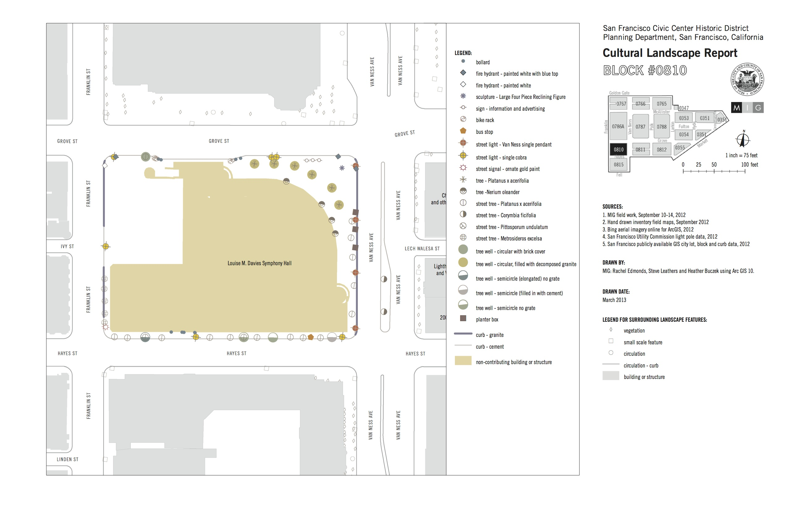

Consulting
For over six years, I worked as a consultant at MIG, an urban planning, landscape architecture, and environmental science firm.
When you work at a large firm for a long period of time and are excited by lots of things, your role tends to become less and less defined over time. I started out working strictly on GIS projects, until they found out I knew how websites worked. That transitioned into building email newsletters, working directly with clients, data science projects, and a whole lot of other types of work.
All of this to say, six years of a career like this doesn't necessarily translate well to a resumé. So this is an attempt to discuss all of the things I've done as a consultant.
Data Science
I first became enamored with Data Science after taking a handful of Coursera courses from Johns Hopkins University. It was a great introduction to programming in R, and I've taught myself a lot more along the way. Eventually, I figured out a way to work it into my consulting projects.
Data Science is great when coupled with Social Media. It's easy to impress clients when you say "here are 5,000 georeferenced tweets that happened right by your project site". It also makes it really easy to pull over 1,000 comments that are made on a City's Facebook post and aggregate them into an easy to analyze spreadsheet.
Marketing
I earned a Bachelor's Degree in Marketing in 2007, so it's hard for me not to use the things that I learned then in my everyday professional life. In consulting, this can include Social Media Strategy, Email Marketing Design and Production, Ad Buys, and any number of other things.
Geography
I was originally hired by the consulting firm to do a large-scale demographic GIS analysis of several counties in California. The project was looking for which communities to market to for a statewide home energy retrofit program.

Later on in my tenure as a Project Associate, I had the good fortune to work on the San Francisco Civic Center Cultural Landscape Report. The project was fascinating for a number of reasons: it's a very historically rich part of the country, the level of detail was very intense, and the map products turned out very well.
Web Development and Design
When I started working as a consultant, I had done some minimal web development work: building a portfolio site for myself, lots of longhand HTML and CSS coding, and some light javascript. Throughout my time at MIG, I was given more and more web-related tasks including client training, coding, quality assurance testing, and online survey development.
Online Survey Development
While at MIG, we had an exclusive development agreement with Maptionnaire, an online place-based survey platform developed by a group of social scientists based in Helsinki. I took the lead on many of these surveys, developing questions, analyzing results, and turning GIS resouces into Mapbox layers. Some examples include Watkins Regional Park, Morgan Hill, CA Bikeways, Trails, Parks, and Recreation Survey,
I also developed more traditional style surveys using the open source Limesurvey platform. Limesurvey is similar to Survey Monkey, but with a bit more power. Since we maintained the source on our servers, we were able to customize the survey system to do things that aren't possible with other online survey platforms. Many of these have since been decommissioned, but some surveys remain, like the Arroyo Seco Master Sign Plan Community Survey or the Solano | Napa Commuter Info Website Employer Survey.